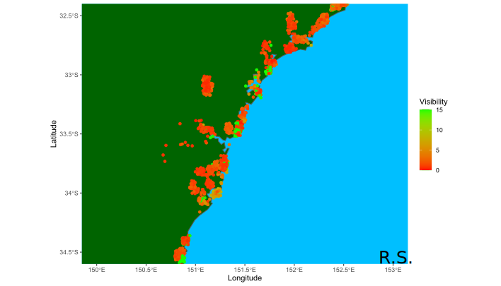

Project Goal
The goal of this project is to create a model that can forecast the water visibility with a mean absolute error below 2 m. The forecasting model is intended to be a tool that
can be used alongside other weather forecasts to check the suitability of the conditions for diving, spearfishing and snorkelling. Any suggestsions or help is welcome and much
appreciated.
Updates
Forecasts last updated 8/1/21 at 7:30am
Major Update: 27/12/20
Currently working on utilising the Willy Weather API and BOM historical data to gather predictive data. This will allow forecasts for everyday of the week, and more locations.
Major Update: 30/11/20
A new deep learning model was built within the keras framework and is currently being tested.
Minor Updates: 25/11/20
A geospatial plot of visibility was created using my own data alongside data used under CC BY 4.0 from
NSW Estuary Water Quality Data Compilation: 2007 - 2020
managed by the NSW Department of Planning, Industry and Environment.

Click here to view an interactive version of the above figure.
Minor Updates: 13/11/20
A new model based off of the original was made for specific locations to reduce the prediction interval and is currently being tested.